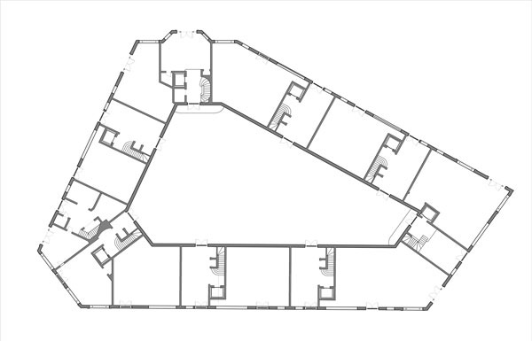

A proposed addition to Paris' 19th Arrondisement. The site sits against the Canal l'Ourqc between Claude-Nicolas Ledoux's La Villete Rotunda and Bernard Tschumi's Parc de la Villette. This proposal is composed of two structures, a bar building and a courtyard building. The bar type building sits along the waterfront adjacent to a historical pump-house on the site while a courtyard building wraps around the remainder of the site. The courtyard building addresses the public streets and site interior while constructing a private space for residents. The buildings create a triangular public space and pedestrian boulevard within the site which will be lined with commercial spaces as well as residential access and staircases are provided at key locations for a proposed highline intervention for the rail. Central vertical circulations will serve two to 4 residential units or provide access to corridors lined with student housing. A mezzanine level provides amenities for residents such as gym equipment, card rooms/ lounges, and community libraries. Typical Parisian plaster will cover the facade with the exception of decorative tile that reflects moments within the courtyard building where a modular plan is constructed.
